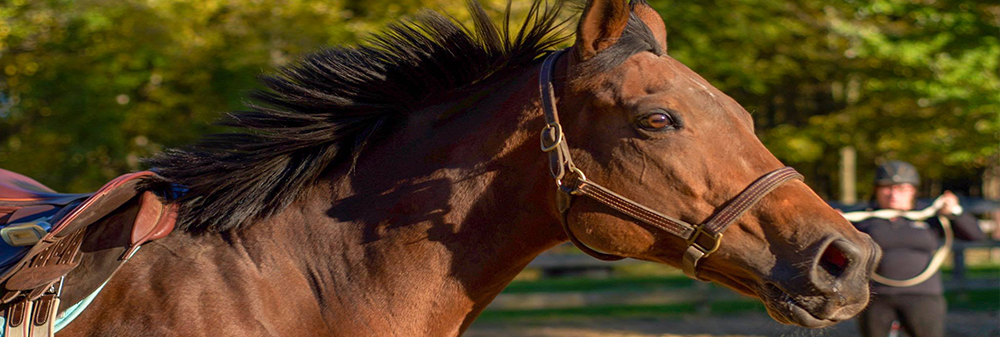

Board and Training Packages
We offer several types of training packages. Whether your horse is completely green, needs a tune up, or is starting in a new discipline, we can customize a training package to meet your needs.
Full-time Training
Horses in fulltime training are worked by our trainers five times a week, with goals tailored to the owner. Fulltime training includes full-board.
Part-time Training
Horses in part-time training will be worked 3 times a week. Part-time training can be packaged with full or partial care board.
Individual Training Sessions
Individual training sessions are available for both boarders and clients who would like to haul in. Individual training sessions are not packaged with board.